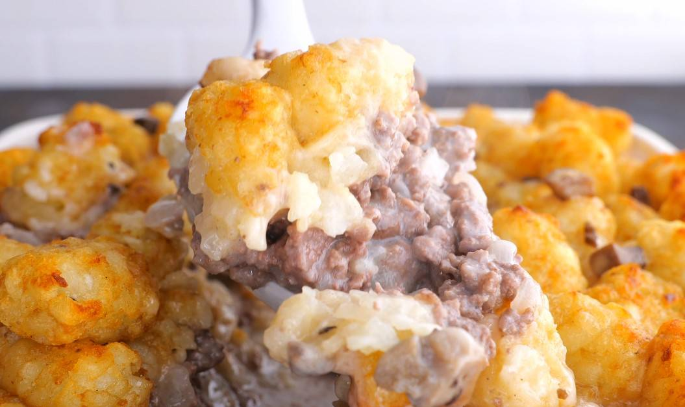

Tater Tot Casserole

Description
If you are needing a simple, crowd-pleasing meal, make this tater tot casserole. Eveyone always approves! This is so comforting with basic, easy to love ingredients. Plus, this dish works for many occasions. Personally, I love this as a side for a big family cookout, but it could work just as well as a main course or side dish at a potluck or holiday meal.
Ingredients
- 1 pound ground beef
- 5 cloves garlic
- 1 can cream of mushroom soup
- 2 cups cheddar cheese
- 25 ounce frozen tater tots
- 2 tablespoons chives or green onions
- salt and pepper
Instructions
- Mince the garlic.
- In a pan over medium heat, brown the ground beef with the garlic until cooked (no pink remains). The meat can be slightly undercooked at this stage, so don’t overcook it, as it will bake in the oven for another 35 minutes.
- Remove the pan from the heat and stir in the can of soup and season with a little salt and pepper.
- Now assemble the casserole. Lightly grease a 9×13 pan. Add the meat mixture. Then sprinkle on the grated cheese. Then add the tater tots (frozen).
- Bake at 350°F (177°C) for 35-40 minutes. The tater tots should look golden brown and crispy and the mixture below will be bubbling.
- Top with chives or other fresh herbs and serve warm.